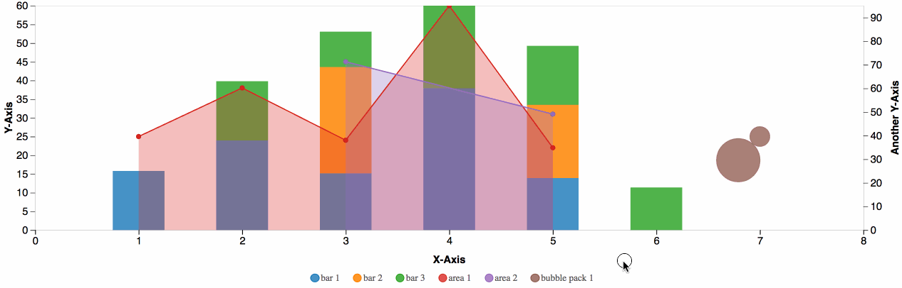

d2b › Chart Axis

# d2b.chartAxis()
Constructs a new axis chart generator with the default settings.
When using the d2b-axis generator you can draw an axis chart onto each element in the selection.
# axis(context)
Render the axis chart(s) to the given context, which may be either a d3-selection of html containers (e.g. div) or a corresponding d3-transition.
Before applying the d2b-axis-chart generator, you should join the data to the selected element(s) using selection.data or selection.datum. Here is the default data format.
var axis = d2b.chartAxis();
axis.chartFrame().size({height: 400});
var chart = d3.selectAll('.axis-chart');
var data = {
sets: [
{
yType: 'y2',
generators: [d2b.svgBar().padding(0.5).stackBy(true)],
graphs: [
{
label: 'bar 1',
values: [
{x: 1, y: 25},
{x: 2, y: 38},
{x: 3, y: 24},
{x: 4, y: 60},
{x: 5, y: 22}
]
},
{
label: 'bar 2',
values: [
{x: 3, y: 45},
{x: 5, y: 31},
]
},
{
label: 'bar 3',
values: [
{x: 2, y: 25},
{x: 3, y: 15},
{x: 4, y: 35},
{x: 5, y: 25},
{x: 6, y: 18},
]
}
]
},
{
generators: [d2b.svgArea(), d2b.svgLine(), d2b.svgScatter()],
graphs: [
{
label: 'area 1',
hidden: true,
values: [
{x: 1, y: 25},
{x: 2, y: 38},
{x: 3, y: 24},
{x: 4, y: 60},
{x: 5, y: 22}
]
},
{
label: 'area 2',
hidden: true,
values: [
{x: 3, y: 45},
{x: 5, y: 31},
]
}
]
}
]
};
chart
.datum(data)
.transition()
.call(axis);
# axis.chartFrame([chartFrame])
If chartFrame is specified, sets the chartFrame generator to the specified d2b.chartFrame and returns the axis-chart generator. If chartFrame is not specified, returns the current chartFrame generator, which defaults to d2b.chartFrame().legendEnabled(true).breadcrumbsEnabled(false).
The chartFrame can be configured at will.
# axis.plane([plane])
If plane is specified, sets the plane generator to the specified d2b.plane and returns the axis-chart generator. If plane is not specified, returns the current plane generator, which defaults to d2b.plane().
The chartFrame can be configured at will, except for the size, x, y, x2, y2, and axis properties which will be set automatically by the axis-chart.
# axis.legend([legend])
If legend is specified, sets the legend generator to the specified d2b.legend and returns the axis-chart generator. If legend is not specified, returns the current legend generator, which defaults to d2b.legend().clickable(true).dblclickable(true).
The legend can be configured at will, except for the html, color, key, empty, setEmpty, and values properties which will be set automatically by the pie-chart.
Datum Level Accessors
When the d2b axis-chart generator is applied to a selection, the following properties will be invoked. The function will be passed the element's bound datum d.
# axis.tooltipConfig([tooltipConfig])
If tooltipConfig is specified, sets the tooltipConfig to the specified accessor function and returns the axis-chart generator. If tooltipConfig is not specified, returns the current tooltipConfig accessor, which defaults to:
function (d) {
return d.tooltipConfig;
}
The tooltip-config function that is returned will be supplied with the d2b.tooltipAxis that is being used to render the axis chart.
# axis.duration([duration])
If duration is specified, sets the duration of the internal chart transitions to the specified accessor function or value and returns the axis-chart generator. If duration is not specified, returns the current duration accessor, which defaults to () => 250.
# axis.annotation([d3-annotation])
If d3-annotation is specified, sets the annotation generator to the specified d3-annotation and returns the axis-chart generator. If d3-annotation is not specified, returns the current annotation generator, which defaults to a d3.annotation().
# area.annotations([annotations])
If annotations is specified, sets the annotations accessor to the specified accessor function and returns the axis-chart generator. If annotations is not specified, returns the current annotations accessor, which defaults to:
function (d) {
return d.annotations;
}
# axis[axisType]([config])
If config is specified, sets the config-accessor to the specified function or object. If config is not specified, returns the current config-accessor. The default config-accessor is d => {}.
In addition to the datum, the config-accessor is passed an array of points that will be rendered on this axis's scale. Here is an example of an axis configuration that is dynamic based on the values:
function (d, points) {
return {
scale: d3.scaleLinear()
.domain([d3.min(points) || 0, d3.max(points) || 0]),
// The rest of the attributes in this object will propagate directly to
// the d2b.plane() that the axis chart is using.
label: 'People (in millions)',
};
}
# axis.x([x])
See axis[axisType].
# axis.y([y])
See axis[axisType].
# axis.x2([x2])
See axis[axisType].
# axis.y2([y2])
See axis[axisType].
# axis.groups([groups])
If groups is specified, sets the groups array to the specified accessor function or array and returns the axis-chart generator. If groups is not specified, returns the current groups accessor, which defaults to:
function (d) {
return d.groups;
}
# axis.sets([sets])
If sets is specified, sets the sets array to the specified accessor function or array and returns the axis-chart generator. If sets is not specified, returns the current sets accessor, which defaults to:
function (d) {
return d.sets;
}
Group Level Accessors
When the d2b axis-chart generator is applied to a selection, the following properties will be invoked for each group in the groups array. The function will be passed the group data d.
# axis.groupColor([groupColor])
If groupColor is specified, sets the groupColor accessor to the specified accessor function and returns the axis chart generator. If groupColor is not specified, returns the current groupColor accessor, which defaults to:
// define d3 color scale that will be used in the accessor
var color = d3.scaleOrdinal(d3.schemeCategory10);
function (d) {
return color(axis.groupLabel()(d));
}
# axis.groupLabel([groupLabel])
If groupLabel is specified, sets the groupLabel accessor to the specified accessor function and returns the axis chart generator. If groupLabel is not specified, returns the current groupLabel accessor, which defaults to:
function (d) {
return d.label;
}
Set Level Accessors
When the d2b axis-chart generator is applied to a selection, the following properties will be invoked for each set in the sets array. The function will be passed the group data d.
# axis.setKey([key])
If key is specified, sets the set-key accessor and returns the axis chart generator. If key is not specified, returns the current set-key accessor, which defaults to:
function (d, i) {
return i;
}
Note: In addition to the set datum d, the set-key accessor is also passed the set index in the sets array.
# axis.setGenerators([setGenerators])
If setGenerators is specified, sets the setGenerators accessor to the specified accessor function and returns the axis chart generator. If setGenerators is not specified, returns the current setGenerators accessor, which defaults to:
function (d) {
return d.generators;
}
# axis.setXType([type])
If type is specified, sets the type accessor to the specified accessor function and returns the axis chart generator. If type is not specified, returns the current type accessor, which defaults to:
function (d) {
return d.xType;
}
The set's x-type should be either 'x' or 'x2'. If the accessor returns falsy then an x-type of 'x' will be used.
# axis.setYType([type])
If type is specified, sets the type accessor to the specified accessor function and returns the axis chart generator. If type is not specified, returns the current type accessor, which defaults to:
function (d) {
return d.yType;
}
The set's y-type should be either 'y' or 'y2'. If the accessor returns falsy then an y-type of 'y' will be used.
# axis.setGraphs([setGraphs])
If setGraphs is specified, sets the setGraphs accessor to the specified accessor function and returns the axis chart generator. If setGraphs is not specified, returns the current setGraphs accessor, which defaults to:
function (d) {
return d.graphs;
}
Graph Level Accessors
When the d2b axis-chart generator is applied to a selection, the following properties will be invoked for each graph in the graphs array. The function will be passed the graph data d.
# axis.graphColor([graphColor])
If graphColor is specified, sets the graphColor accessor to the specified accessor function and returns the axis chart generator. If graphColor is not specified, returns the current graphColor accessor, which defaults to:
// define d3 color scale that will be used in the accessor
var color = d3.scaleOrdinal(d3.schemeCategory10);
function (d) {
return color(axis.graphLabel()(d));
}
# axis.graphLabel([graphLabel])
If graphLabel is specified, sets the graphLabel accessor to the specified accessor function and returns the axis chart generator. If graphLabel is not specified, returns the current graphLabel accessor, which defaults to:
function (d) {
return d.label;
}
# axis.graphGroup([graphGroup])
If graphGroup is specified, sets the graphGroup accessor to the specified accessor function and returns the axis chart generator. If graphGroup is not specified, returns the current graphGroup accessor, which defaults to:
function (d) {
return d.group;
}
If a falsy graph is not associated with any group it will be considered to be in it's own group. The graph-group should correspond to one of the groups' label.
# axis.graphAnnotations([annotations])
If annotations is specified, sets the graph-annotations accessor to the specified accessor function and returns the axis-chart generator. If annotations is not specified, returns the current graph-annotations accessor, which defaults to:
function (d) {
return d.annotations;
}
# axis.graphTooltipConfig([graphTooltipConfig])
If graphTooltipConfig is specified, sets the graphTooltipConfig to the specified accessor function and returns the axis-chart generator. If graphTooltipConfig is not specified, returns the current graphTooltipConfig accessor, which defaults to:
function (d) {
return d.tooltipConfig;
}
The tooltip-config function that is returned will be supplied with the d2b.tooltipAxis that is being used to render the axis chart.
If a graphTooltipConfig is specified, it will override the tooltipConfig that may be specified for the entire chart.
Annotation Level Accessors
When the d2b axis-chart generator is applied to a selection, the following properties will be invoked for each annotation in the annotations array as well as the annotations in each graphAnnotations array. The function will be passed the annotation data d.
# axis.annotationKey([key])
If key is specified, sets the annotation-key accessor and returns the axis chart generator. If key is not specified, returns the current annotation-key accessor, which defaults to:
function (d, i) {
return i;
}
Note: In addition to the set datum d, the annotation-key accessor is also passed the annotation index. The annotations and graphAnnotations are first all compiled together and so their index will reflect this. Additionally, the keys of all annotations must be unique otherwise they will conflict with one another.
# axis.annotationXType([type])
If type is specified, sets the annotation-x-type accessor to the specified accessor function and returns the axis chart generator. If type is not specified, returns the current annotation-x-type accessor, which defaults to:
function (d) {
return d.xType;
}
The annotation's x-type should be either 'x' or 'x2'. If the accessor returns falsy then an x-type of 'x' will be used.
# axis.annotationYType([type])
If type is specified, sets the annotation-y-type accessor to the specified accessor function and returns the axis chart generator. If type is not specified, returns the current annotation-y-type accessor, which defaults to:
function (d) {
return d.yType;
}
The annotation's y-type should be either 'y' or 'y2'. If the accessor returns falsy then an y-type of 'y' will be used.
# axis.annotationZ([z])
If z is specified, sets the the annotation-z accessor function and returns the axis chart generator. If z is not specified, returns the current annotation-z accessor, which defaults to:
function (d) {
return d.z;
}
The annotation's z value should be either 'front' or 'back'. If the accessor returns falsy then it will default to 'front'.
# axis.annotationX([x])
If x is specified, sets the the annotation-x accessor function and returns the axis chart generator. If x is not specified, returns the current annotation-x accessor, which defaults to:
function (d) {
return d.x;
}
The x value should be represented in the data space. This is different from using d3.annotation directly where you would indicate x as a visual pixel value.
# axis.annotationY([y])
If y is specified, sets the the annotation-y accessor function and returns the axis chart generator. If y is not specified, returns the current annotation-y accessor, which defaults to:
function (d) {
return d.y;
}
The y value should be represented in the data space. This is different from using d3.annotation directly where you would indicate y as a visual pixel value.
# axis.annotationX2([x2])
If x2 is specified, sets the the annotation-x2 accessor function and returns the axis chart generator. If x2 is not specified, returns the current annotation-x2 accessor, which defaults to:
function (d) {
return d.x2;
}
The x2 value is only used when rendering a horizontal d3.annotationXYThreshold or d3.annotationCallourRect. This value will be used to automatically generate the threshold endpoints or rectangle width.
# axis.annotationY2([y2])
If y2 is specified, sets the the annotation-y2 accessor function and returns the axis chart generator. If y2 is not specified, returns the current annotation-y2 accessor, which defaults to:
function (d) {
return d.y2;
}
The y2 value is only used when rendering a vertical d3.annotationXYThreshold or d3.annotationCallourRect. This value will be used to automatically generate the threshold endpoints or rectangle height.
# axis.annotationColor([color])
If color is specified, sets the the annotation-color accessor function and returns the axis chart generator. If color is not specified, returns the current annotation-color accessor, which defaults to:
function (d) {
return d.color;
}
In the case of a axis chart annotation the default color will be 'steelblue'. In the case of a graph annotation the color will default to the graph's color.